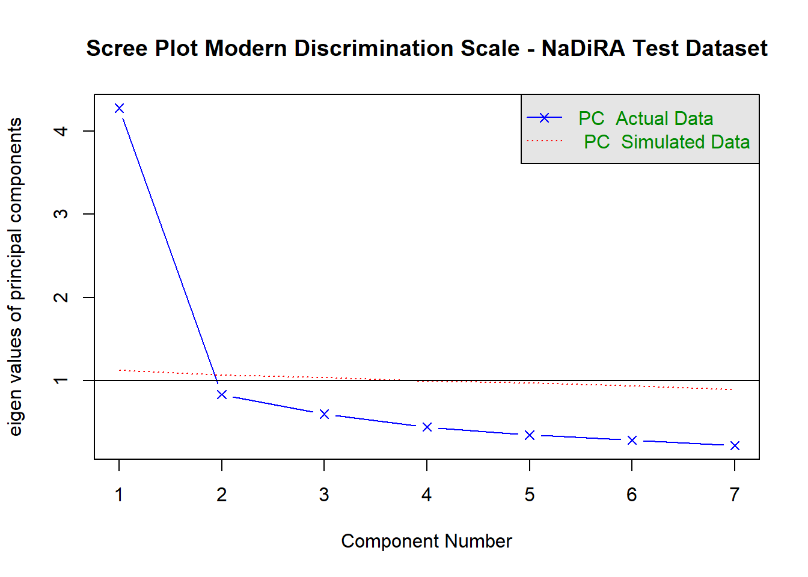
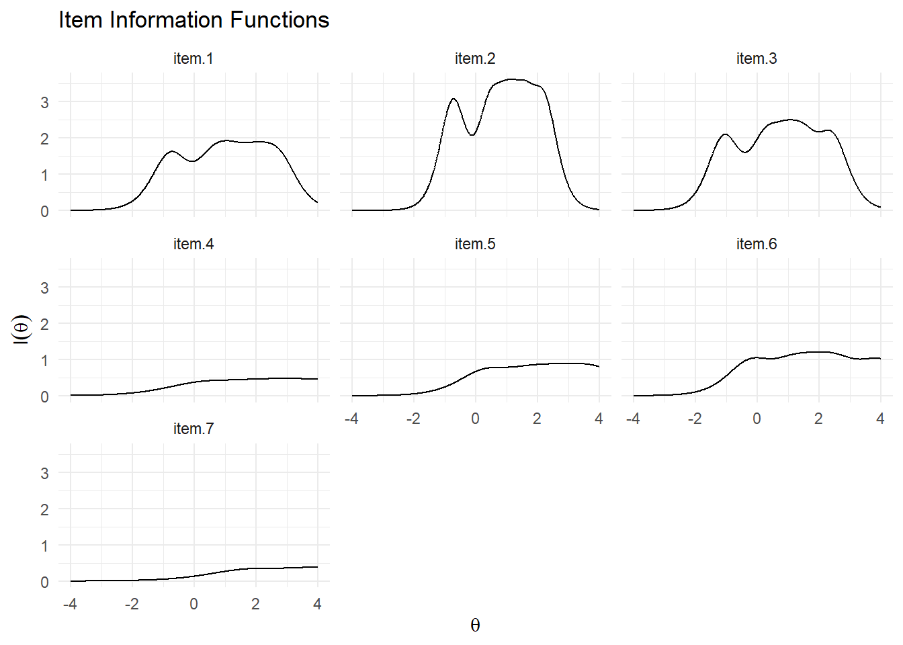
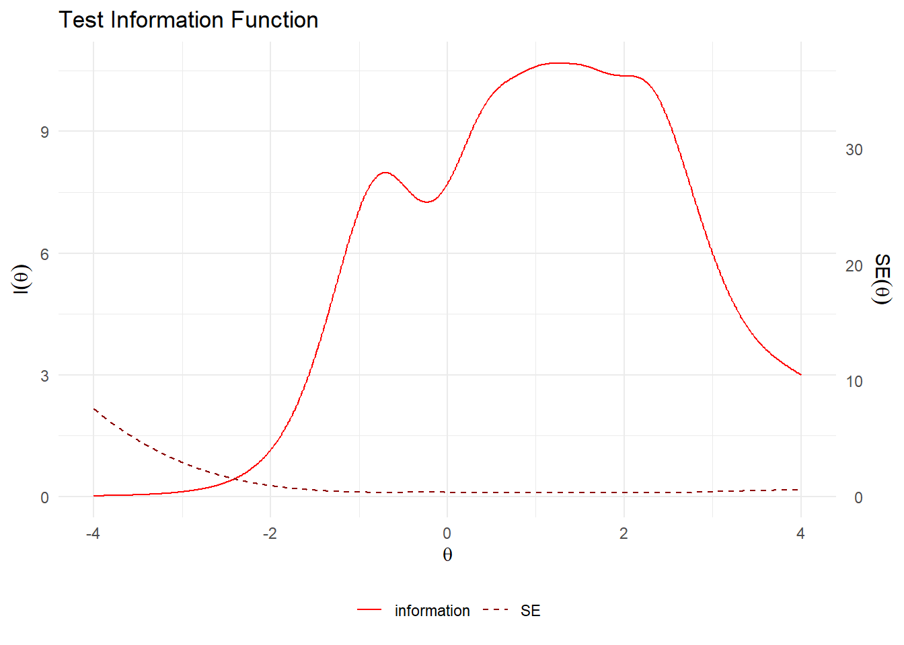
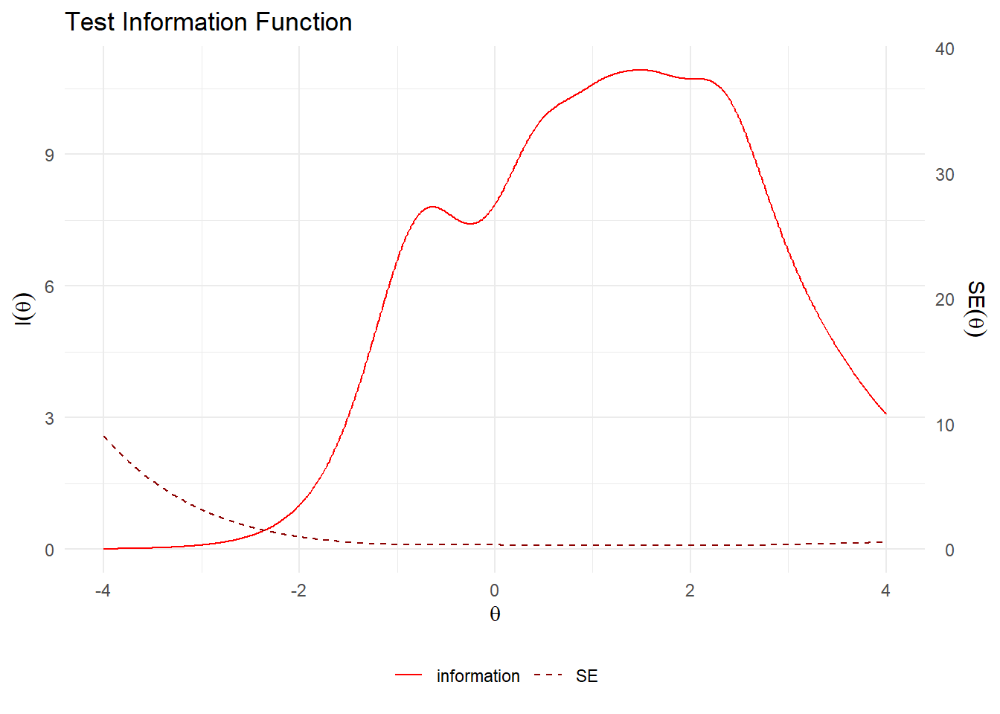
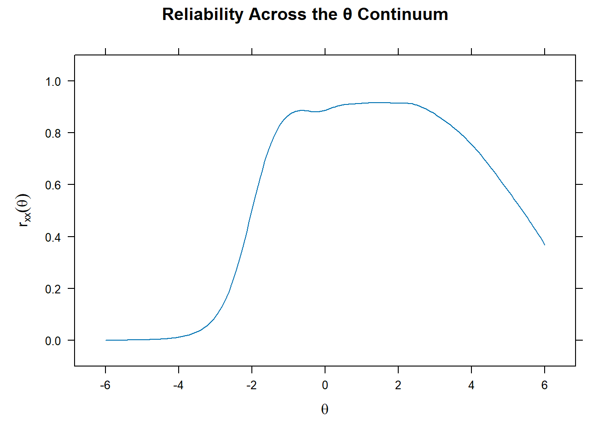

install.packages(
c("tidyverse", # data wrangling
"psych", # descriptive stats & unidimensionality checks
"pak", # to install a GitHub-only package (ggmirt)
"mirt", # the main GRM engine
"caret", # flagging large residual correlations
"skimr", # quick look at data distributions
"haven" # to import the NaDiRA STATA .dta file
),
dependencies = TRUE
)
pak::pak("masurp/ggmirt") # ggmirt available only on githubHands-On: Fitting a Graded Response Model
with NaDiRA dataset
Welcome!
This is the hands-on companion to “Introduction to IRT’s Graded Response Model”. It mirrors the workflow from the tutorial paper this workshop is based on, but on a different dataset.
NoteTwo ways to run this document
This document can run on the snippet of real NaDiRA dataset (for the workshop room) or on simulated data calibrated to resemble it.
- In the workshop: setting
USE_SIMULATED_DATA <- FALSE— will read the real dataset.- Before running
.qmdor.Rmddocument with the real dataset, please create a new folderdata/in your project root, then keep the dataset there.
- Before running
- If you don’t have any access to the dataset:
USE_SIMULATED_DATA <- TRUE, which generates a synthetic dataset from item parameters estimated on the real data, so the shape and difficulty of the exercise carry over, but every response is simulated withmirtpackage. There is no real participants’ data is in it.
We’ll go through 9 short steps together: meet the dataset, check dimensionality, fit the GRM, read its output, inspect residual correlations, and think about what it means for your own scales.
WarningIf you’re running the simulated dataset
The numbers and conclusions quoted in Steps 8 and 9 describe the real NaDiRA data and won’t replicate under USE_SIMULATED_DATA <- TRUE. simdata() generates responses that exactly satisfy the fitted GRM, so the simulated model and item fit (Step 8) comes out essentially perfect (no misfitting model or items at all), and it has no local dependence built in at all (the problematic \(Q_3\) pair highlighted in Step 9 won’t appear). Steps 2–7 will look similar, though not identical, either way.
Step 0: Setup — packages
If you already have these installed, skip this chunk.
Now activate them.
library(tidyverse)
library(psych)
library(mirt)
library(ggmirt)
library(caret)
library(skimr)
library(haven)Step 1: Meet the dataset
The swap-in code chunk
Everything dataset-specific lives here. This is the only chunk you should need to touch to move between the real data and the simulated version.
USE_SIMULATED_DATA <- FALSE # set TRUE if you don't have an access to the dataset
DATA_PATH <- "../data/NaDiRa_Teaching_w0.dta" # path to the dataset don't forget to create a new folder `data/` in your project root, then keep the dataset file there
ITEM_COLS <- c(
"ker_diskerf_service", "ker_diskerf_respekt", "ker_diskerf_nernst",
"ker_diskerf_angst", "ker_diskerf_bedbel", "ker_diskerf_beleid",
"ker_diskerf_angriff"
)
N_CATEGORIES <- 6 # response categories per item (1-6)The items
This is question 3 of the NaDiRA survey instrument: “Kommen wir nun zu Ihren Erfahrungen im täglichen Leben. Wie häufig passieren Ihnen in Ihrem Alltag die folgenden Dinge?” (“Now let’s turn to your everyday experiences. How often do the following things happen to you in your daily life?”)
| Variable name | 🇩🇪 German original | 🇬🇧 English |
|---|---|---|
ker_diskerf_service |
Sie erhalten schlechteren Service als andere. | You receive poorer service than other people. |
ker_diskerf_respekt |
Sie werden mit weniger Respekt behandelt als andere. | You are treated with less respect than other people. |
ker_diskerf_nernst |
Jemand verhält sich so, als würde sie/er Sie nicht ernst nehmen. | Someone acts as if they don’t take you seriously. |
ker_diskerf_angst |
Jemand verhält sich so, als habe sie/er Angst vor Ihnen. | Someone acts as if they’re afraid of you. |
ker_diskerf_bedbel |
Sie werden bedroht/belästigt. | You are threatened/harassed. |
ker_diskerf_beleid |
Sie werden beleidigt/beschimpft. | You are insulted/being called names. |
ker_diskerf_angriff |
Sie werden körperlich angegriffen. | You are physically attacked. |
The response options in the questionnaire run left to right: Daily/Täglich (1) · At least once per week/Mindestens einmal in der Woche (2) · At least once per month/Mindestens einmal im Monat (3) · Several times a year/Mehrmals im Jahr (4) · Less often/Seltener (5) · Never/Nie (6).
NoteNo need to reverse the scores
You are given a cleaned dataset in which all the scale data has been reversed. So, the larger scores now reflect more intense experience of discrimination, and vice versa.
Importing and cleaning the dataset
Run this code chunk to simulate/generate a synthetic dataset. If you have access to a real dataset, you can also run this code chunk to clean and prepare it for analysis.
if (USE_SIMULATED_DATA) {
# ---- calibrated simulation: parameters estimated once on the real data ----
# (a = discrimination, d = intercepts; this array reproduces the item
# difficulty/discrimination pattern of the real dataset without using any
# real participants' answers)
set.seed(2026)
a_par <- c(2.34, 3.43, 2.75, 1.42, 1.75, 2.13, 1.51)
d_par <- matrix(
c(
1.80, -1.44, -2.99, -5.04, -6.60,
2.46, -1.72, -3.84, -5.54, -7.84,
2.65, -0.80, -2.79, -4.41, -6.49,
-0.48, -2.49, -3.37, -3.99, -5.20,
-0.62, -3.12, -4.44, -5.53, -6.70,
0.19, -2.49, -3.85, -5.07, -6.86,
-2.30, -4.73, -5.43, -6.49, -7.93
),
nrow = length(ITEM_COLS), ncol = N_CATEGORIES - 1, byrow = TRUE
)
raw <- simdata(a = a_par, d = d_par, N = 970, itemtype = "graded") + 1
raw <- as.data.frame(raw)
colnames(raw) <- ITEM_COLS
} else {
raw <- read_dta(DATA_PATH) %>%
select(all_of(ITEM_COLS)) %>%
mutate(across(everything(), as.numeric)) # drop haven_labelled class, keep plain numeric codes
}
str(raw)tibble [1,000 × 7] (S3: tbl_df/tbl/data.frame)
$ ker_diskerf_service: num [1:1000] 1 2 4 3 1 2 2 3 1 3 ...
$ ker_diskerf_respekt: num [1:1000] 1 2 3 2 1 4 2 2 1 2 ...
$ ker_diskerf_nernst : num [1:1000] 1 3 4 4 2 5 1 1 1 4 ...
$ ker_diskerf_angst : num [1:1000] 1 1 3 1 1 1 1 1 1 1 ...
$ ker_diskerf_bedbel : num [1:1000] 1 1 2 3 2 1 1 1 1 1 ...
$ ker_diskerf_beleid : num [1:1000] 1 1 2 2 2 2 1 1 1 2 ...
$ ker_diskerf_angriff: num [1:1000] 1 1 1 1 1 1 1 1 1 1 ...Checking for missing data
Run this chunk especially if you use the real dataset, because we have several missing values in the real dataset.
n_total <- nrow(raw)
n_complete <- sum(complete.cases(raw))
cat(
n_complete, "of", n_total, "respondents have complete responses on all", length(ITEM_COLS),
"items (", round(100 * n_complete / n_total, 1), "%).\n"
)972 of 1000 respondents have complete responses on all 7 items ( 97.2 %).data <- raw %>% filter(complete.cases(.))We use complete cases here (N = 972) for simplicity. With well under 5% missing, listwise deletion costs us very little.
mirt can also model missingness directly via full-information maximum likelihood (FIML), but that’s beyond today’s scope.
Step 2: Quick data check
describe(data)skim(data)| Name | data |
| Number of rows | 972 |
| Number of columns | 7 |
| _______________________ | |
| Column type frequency: | |
| numeric | 7 |
| ________________________ | |
| Group variables | None |
Variable type: numeric
| skim_variable | n_missing | complete_rate | mean | sd | p0 | p25 | p50 | p75 | p100 | hist |
|---|---|---|---|---|---|---|---|---|---|---|
| ker_diskerf_service | 0 | 1 | 2.24 | 1.11 | 1 | 1 | 2 | 3 | 6 | ▇▂▁▁▁ |
| ker_diskerf_respekt | 0 | 1 | 2.33 | 1.21 | 1 | 1 | 2 | 3 | 6 | ▇▂▁▁▁ |
| ker_diskerf_nernst | 0 | 1 | 2.51 | 1.23 | 1 | 2 | 2 | 3 | 6 | ▇▃▂▁▁ |
| ker_diskerf_angst | 0 | 1 | 1.65 | 1.03 | 1 | 1 | 1 | 2 | 6 | ▇▁▁▁▁ |
| ker_diskerf_bedbel | 0 | 1 | 1.55 | 0.84 | 1 | 1 | 1 | 2 | 6 | ▇▁▁▁▁ |
| ker_diskerf_beleid | 0 | 1 | 1.84 | 1.03 | 1 | 1 | 2 | 2 | 6 | ▇▁▁▁▁ |
| ker_diskerf_angriff | 0 | 1 | 1.19 | 0.53 | 1 | 1 | 1 | 1 | 6 | ▇▁▁▁▁ |
Look at the hist column — frequency-of-negative-experience items like these are typically right-skewed (most people report “Nie”/“Seltener”). ker_diskerf_angriff (physical attack) should look the most extreme; the everyday-slight items (nernst, respekt, service) should look comparatively less skewed.
That skew is exactly why we’ll use a polychoric correlation matrix (instead of Pearson’s or Spearman) for the dimensionality check below.
And that’s exactly what we see: ker_diskerf_angriff is by far the most skewed item (skew = 3.90, mean = 1.19, so almost everyone answers “Nie”), while ker_diskerf_nernst is the mildest (skew = 0.83, mean = 2.51).
The severe/rare items and the everyday/common items sit at opposite ends, which is a good sign the item set spans a real range of severity rather than all measuring the same narrow slice of experience.
Step 3: Dimensionality — a quick glance
You already ran this exact logic this morning in the factor analysis session. We will do a fast check to confirm a single \(\theta\) underlies this item pool.
With only 6 response categories, Pearson’s/Spearman correlations understate how strongly these items actually relate to each other, so a polychoric correlation matrix is the more appropriate input here for factor analysis (De Ayala & Hertzog, 1991; recommended specifically for 4–7 category Likert data by Guo & Choi, 2023). psych::irt.fa() computes it for us automatically:
efa <- irt.fa(data, nfactors = 1, fm = "minres", plot = FALSE)
print(efa$fa)Factor Analysis using method = minres
Call: fa(r = r, nfactors = nfactors, n.obs = n.obs, rotate = rotate,
fm = fm)
Standardized loadings (pattern matrix) based upon correlation matrix
MR1 h2 u2 com
ker_diskerf_service 0.72 0.52 0.48 1
ker_diskerf_respekt 0.84 0.71 0.29 1
ker_diskerf_nernst 0.80 0.65 0.35 1
ker_diskerf_angst 0.62 0.38 0.62 1
ker_diskerf_bedbel 0.73 0.53 0.47 1
ker_diskerf_beleid 0.80 0.64 0.36 1
ker_diskerf_angriff 0.65 0.42 0.58 1
MR1
SS loadings 3.85
Proportion Var 0.55
Mean item complexity = 1
Test of the hypothesis that 1 factor is sufficient.
df null model = 21 with the objective function = 3.9 with Chi Square = 3773.91
df of the model are 14 and the objective function was 0.45
The root mean square of the residuals (RMSR) is 0.05
The df corrected root mean square of the residuals is 0.06
The harmonic n.obs is 972 with the empirical chi square 94.82 with prob < 4.6e-14
The total n.obs was 972 with Likelihood Chi Square = 430.61 with prob < 4.4e-83
Tucker Lewis Index of factoring reliability = 0.833
RMSEA index = 0.175 and the 90 % confidence intervals are 0.161 0.189
BIC = 334.3
Fit based upon off diagonal values = 0.99
Measures of factor score adequacy
MR1
Correlation of (regression) scores with factors 0.95
Multiple R square of scores with factors 0.91
Minimum correlation of possible factor scores 0.81plot(efa$fa$values, type = "b", main = "Scree Plot", xlab = "Factor", ylab = "Eigenvalue")
abline(h = 1, col = "red", lty = 2)
If the proportion of variance explained by the first factor is comfortably above 50% and the scree plot elbows sharply after one factor, unidimensionality is reasonably supported, so we can proceed to the GRM.
Here, it shows that Proportion Var = .55, with loadings between .62 and .84. Every item is solidly on the one factor, none of them weak or borderline. The scree plot backs this up (eigenvalues 3.85 then a sharp drop to 0.38). Comfortably unidimensional, so we can go on to the GRM.
Step 4: Fit the GRM
model <- paste0("theta = 1-", length(ITEM_COLS)) # specifying the model
model # we can see here the model contains one LV (theta) with 7 items[1] "theta = 1-7"fit <- mirt(data = data, model = model, itemtype = "graded", SE = TRUE, verbose = FALSE) # now fit the model
coefs <- coef(fit, IRTpars = TRUE, simplify = TRUE) # keep item parameters in a vector
print(coefs) # print item parameters$items
a b1 b2 b3 b4 b5
ker_diskerf_service 2.338 -0.771 0.615 1.278 2.154 2.823
ker_diskerf_respekt 3.430 -0.719 0.501 1.118 1.615 2.285
ker_diskerf_nernst 2.755 -0.964 0.292 1.014 1.601 2.356
ker_diskerf_angst 1.415 0.338 1.758 2.381 2.817 3.672
ker_diskerf_bedbel 1.752 0.356 1.783 2.533 3.157 3.821
ker_diskerf_beleid 2.127 -0.088 1.172 1.810 2.384 3.226
ker_diskerf_angriff 1.507 1.528 3.137 3.600 4.303 5.264
$means
theta
0
$cov
theta
theta 1a is discrimination; b1–b5 are the five thresholds (six categories → five boundaries). Higher a = an item that differentiates people more sharply; the spread of b values tells you where on \(\theta\) each item is doing its work.
In this scale, ker_diskerf_respekt (“less respect”) has the highest discrimination (a = 3.43), which makes it the sharpest differentiator of the seven, while ker_diskerf_angst (“afraid of you”) has the lowest (a = 1.42).
ker_diskerf_angriff (“physically attacked”) stands out on its thresholds instead: they run from 1.53 up to 5.26, far higher than any other item, meaning it takes an extremely high \(\theta\) before “Täglich” becomes a plausible response, which tracks with how rare that experience actually is.
Step 5: Item probability functions
tracePlot(fit, title = "Item Probability Functions") + labs(color = "Response Category")
Where two curves cross is a threshold. Curves that overlap a lot, or peak only at one end of \(\theta\), are telling you that item is only informative for part of the trait range.
Pick out ker_diskerf_angriff in the grid: because its thresholds sit so far to the right, the “Nie” curve dominates almost the entire visible range. The other five categories barely get a look-in until \(\theta\) is very high. Compare that to ker_diskerf_nernst, whose curves are bunched much closer to the middle, it’s doing useful work across a wider, more central stretch of \(\theta\).
Step 6: Item and test information
This is the information that traditional factor analysis can’t give you: where exactly your scale is precise.
itemInfoPlot(fit, facet = TRUE, title = "Item Information Functions")
NoteWhy some curves have multiple peaks (i.e., multimodal)?
A yes/no item only has one “tipping point” i.e., the trait level where people switch from one answer to the other, so it’s only ever most useful for one type of participants. These items have six response categories, so each one has several tipping points or “steps” as in the staircase illustration (e.g., “rarely” to “sometimes”, “sometimes” to “often”, and so on). If those tipping points are spread far apart along the trait, the item ends up being especially useful for more than one type of participant, therefore showing up as more than one peak instead of just one.
testInfoPlot(fit, title = "Test Information Function")
Compare the shape of the test information curve to where you’d expect your target population to actually sit on \(\theta\). A curve that peaks somewhere your participants rarely fall is a scale that’s precise in the wrong place.
Here, test information peaks around \(\theta \approx 1.5\) (info \(\approx 10.9\)) and stays fairly high out to \(\theta \approx 3\), but falls off sharply below \(\theta \approx -1\) (info \(\approx 1\) at \(\theta = -2\), about a tenth of the peak).
Step 7: Reliability across \(\theta\)
Marginal reliability is the IRT analogue of classical test-theory reliability: it integrates the test information function over an assumed \(\theta\) distribution (normal, by default) to get a single reliability estimate for the population as a whole.
marginal_rxx(fit)[1] 0.8670347Empirical reliability instead uses the actual estimated \(\theta\) scores and their standard errors for this sample, so no distributional assumption required. It’s the ratio of true-score variance to observed-score variance, computed directly from the EAP estimates (or factor scores, in CTT’s term) and their SEs.
theta_se <- fscores(fit, full.scores.SE = TRUE)
empirical_rxx(theta_se) theta
0.869756 # using mirt's own plot() rather than ggmirt::conRelPlot() here -- for some reason,
# mirt/ggmirt version combination conRelPlot() crashes R outright
# mirt's native rxx plot shows the same thing
plot(fit, type = "rxx", main = "Reliability Across the θ Continuum")
Marginal and empirical reliability should be close. The plot shows you where reliability holds up (commonly interpreted as adequate above ~.80) and where it doesn’t, and usually the tails.
Here they are: marginal rxx = .867, empirical rxx = .870 — close, which is reassuring, since it means the reliability estimate isn’t an artifact of assuming a normal \(\theta\) distribution. Reliability stays \(\geq\) .80 across roughly \(\theta\) = -1.2 to 3.35, lining up with the information plot above.
TipWhat does this mean?
In practice: this scale is precise at telling apart people with moderate-to-high discrimination-experience levels, but has little to say about fine-grained differences among people reporting very few or no experiences, which points out exactly the “blind spot” idea from the slides.
Step 8: A quick model-fit check
A light-touch check of the model and item parameters.
M2(fit, type = "C2")itemfit(fit)Rough guide: RMSEA ≤ .05 and non-significant item-level tests are reassuring; don’t over-interpret significance with very large samples, since almost any model will show some misfit.
Here the picture is mixed: RMSEA = .119 (90% CI .105–.133) is well above the ≤.05 “good fit” guideline, but SRMSR = .072 and CFI = .953 sit in the “acceptable” range, and TLI = .93 is borderline.
At the item level, two of seven items (ker_diskerf_service, ker_diskerf_angst) show significant misfit (p < .05); with N = 972 that’s not simply a huge-sample artifact the way it would be with, say, 9,000+ respondents, so it’s worth a closer look. RMSEA tends to be an unreliable indicator with only a handful of items and few degrees of freedom (df = 14 here).
SRMSR is the steadier signal of how much misfit there practically is, and if it’s less than 0.08, then it’s saying “some items are misfitting, but not severe.”
Step 9: Inspecting residual correlations (local dependence)
If global (model) fit tells you whether there’s a problem; residual correlations tell you where the problems are.
If two items still correlate once \(\theta\) is accounted for, they’re carrying some shared content the model isn’t capturing, which is also called local dependence (LD). We’ll use Yen’s \(Q_3\) statistic, which the tutorial paper recommends over the LD \(\chi^2\) statistic specifically for polytomous data like this.
q3 <- residuals(fit, type = "Q3", verbose = FALSE) # asking mirt to compute q3
round(q3, 2) # round the value to only two decimals ker_diskerf_service ker_diskerf_respekt ker_diskerf_nernst
ker_diskerf_service 1.00 -0.01 -0.21
ker_diskerf_respekt -0.01 1.00 -0.22
ker_diskerf_nernst -0.21 -0.22 1.00
ker_diskerf_angst -0.13 -0.20 -0.03
ker_diskerf_bedbel -0.28 -0.30 -0.19
ker_diskerf_beleid -0.30 -0.27 -0.23
ker_diskerf_angriff -0.17 -0.26 -0.11
ker_diskerf_angst ker_diskerf_bedbel ker_diskerf_beleid
ker_diskerf_service -0.13 -0.28 -0.30
ker_diskerf_respekt -0.20 -0.30 -0.27
ker_diskerf_nernst -0.03 -0.19 -0.23
ker_diskerf_angst 1.00 -0.06 -0.03
ker_diskerf_bedbel -0.06 1.00 0.25
ker_diskerf_beleid -0.03 0.25 1.00
ker_diskerf_angriff 0.03 0.13 0.10
ker_diskerf_angriff
ker_diskerf_service -0.17
ker_diskerf_respekt -0.26
ker_diskerf_nernst -0.11
ker_diskerf_angst 0.03
ker_diskerf_bedbel 0.13
ker_diskerf_beleid 0.10
ker_diskerf_angriff 1.00To flag pairs, we apply |\(Q_3\)| > 0.2 critical value (Chen & Thissen, 1997) as a first-pass screen, but see the negative-bias caveat below before treating it as a hard cutoff.
diag(q3) <- 0 # fix the diagonal to 0, avoiding na error
findCorrelation(q3, cutoff = 0.2, names = TRUE, verbose = TRUE) # flag correlation pairs that is more than |0.2|Compare row 2 and column 5 with corr 0.301
Means: 0.21 vs 0.161 so flagging column 2
Compare row 5 and column 6 with corr 0.252
Means: 0.182 vs 0.143 so flagging column 5
Compare row 6 and column 1 with corr 0.3
Means: 0.166 vs 0.117 so flagging column 6
Compare row 1 and column 3 with corr 0.209
Means: 0.17 vs 0.111 so flagging column 1
All correlations <= 0.2 [1] "ker_diskerf_respekt" "ker_diskerf_bedbel" "ker_diskerf_beleid"
[4] "ker_diskerf_service"mean(q3[upper.tri(q3)]) # calculating mean off-diagonal, to see the "no-LD" baseline[1] -0.1185788A couple of things worth knowing before reading this table at face value.
First, \(Q_3\) has a well-documented negative bias, especially with few items: because \(\theta\) is estimated from the same items whose residuals are being correlated, the “no local dependence” baseline isn’t exactly 0, but it’s somewhat below zero (Yen, 1984, p. 127; Marais, 2013 in Christensen, et al., 2016, p. 121). Here that mean off-diagonal \(Q_3\) is -.119.
ImportantWhat does this imply?
Most of the negative values in this residual correlation matrix are the expected statistical byproduct of a handful of strongly-loading items sharing one factor (compare each value to that -.119 baseline, not to 0), so perhaps not necessarily a red flag on their own.
What’s more informative is which pairs sit further from that baseline than the rest. findCorrelation() flags ker_diskerf_respekt↔︎ker_diskerf_bedbel (\(Q_3\) = -.30), ker_diskerf_service↔︎ker_diskerf_beleid (\(Q_3\) = -.30), and a few others beyond |.2|. The one that stands out most is ker_diskerf_bedbel↔︎ker_diskerf_beleid (“threatened/harassed” and “insulted/called names”), at \(Q_3\) = +.25 — a positive residual correlation bucks the general negative trend, which is a stronger signal of local dependence than any of the negative ones: these two items likely share something beyond \(\theta\), plausibly because being threatened and being insulted often happen together in the same hostile encounter.
However, none of this is severe enough to justify dropping an item on the spot.
If the same pattern shows up on the full NaDiRA sample, reasonable next steps are: * rewording one of the overlapping items * modeling them as a testlet, o, * as a last resort, removing one.
Removing items should stay a last resort, because while it can improve model fit it also narrows the scope of what the scale actually measures.
Try it yourself
A few things to explore in the time we have left, or you could just explore this independently after this session:
- Drop the item with the lowest discrimination (
a) frommodeland re-fit. How much does the test information curve change? ker_diskerf_angriff(physical attack) should have the most extreme thresholds of the seven. Confirm that in your output, and think about why that makes substantive sense.- If you were designing a real NaDiRA-based discrimination battery, which part of \(\theta\) would you most want it to be reliable in, and does anything here suggest you’d need more items there?
- If you had the full NaDiRA sample instead of this teaching extract, which item pair from Step 9 would you investigate first and would you reword, parcel, or drop?
Contact
Questions or feedback: amelia.zein@cais-research.de or amelia.zein@psikologi.unair.ac.id
Session Info
sessionInfo()R version 4.6.1 (2026-06-24 ucrt)
Platform: x86_64-w64-mingw32/x64
Running under: Windows 11 x64 (build 26200)
Matrix products: default
LAPACK version 3.12.1
locale:
[1] LC_COLLATE=German_Germany.utf8 LC_CTYPE=German_Germany.utf8
[3] LC_MONETARY=German_Germany.utf8 LC_NUMERIC=C
[5] LC_TIME=German_Germany.utf8
time zone: Europe/Berlin
tzcode source: internal
attached base packages:
[1] stats4 stats graphics grDevices utils datasets methods
[8] base
other attached packages:
[1] haven_2.5.5 skimr_2.2.2 caret_7.0-1 ggmirt_0.1.0
[5] mirt_1.47 lattice_0.22-9 psych_2.6.5 lubridate_1.9.5
[9] forcats_1.0.1 stringr_1.6.0 dplyr_1.2.1 purrr_1.2.2
[13] readr_2.2.0 tidyr_1.3.2 tibble_3.3.1 ggplot2_4.0.3
[17] tidyverse_2.0.0
loaded via a namespace (and not attached):
[1] mnormt_2.1.2 pROC_1.19.1 pbapply_1.7-5
[4] gridExtra_2.3.1 permute_0.9-10 testthat_3.3.2
[7] rlang_1.3.0 magrittr_2.0.5 otel_0.2.0
[10] e1071_1.7-17 compiler_4.6.1 mgcv_1.9-4
[13] vctrs_0.7.3 reshape2_1.4.5 pkgconfig_2.0.3
[16] fastmap_1.2.0 labeling_0.4.3 rmarkdown_2.31
[19] prodlim_2026.03.11 sessioninfo_1.2.4 tzdb_0.5.0
[22] xfun_0.60 jsonlite_2.0.0 splines2_0.5.4
[25] recipes_1.4.0 Deriv_4.3.0 parallel_4.6.1
[28] cluster_2.1.8.2 R6_2.6.1 stringi_1.8.9
[31] RColorBrewer_1.1-3 parallelly_1.48.0 rpart_4.1.27
[34] brio_1.1.5 Rcpp_1.1.2 iterators_1.0.14
[37] knitr_1.51 future.apply_1.20.2 audio_0.1-12
[40] base64enc_0.1-6 R.utils_2.13.0 Matrix_1.7-5
[43] splines_4.6.1 nnet_7.3-20 timechange_0.4.0
[46] tidyselect_1.2.1 yaml_2.3.12 vegan_2.7-6
[49] stringfish_0.19.2 timeDate_4052.112 codetools_0.2-20
[52] dcurver_0.9.3 listenv_1.0.0 plyr_1.8.9
[55] withr_3.0.3 S7_0.2.2 evaluate_1.0.5
[58] future_1.75.0 survival_3.8-9 proxy_0.4-29
[61] RcppParallel_6.2.1 pillar_1.11.1 foreach_1.5.2
[64] generics_0.1.4 hms_1.1.4 scales_1.4.0
[67] globals_0.19.1 qs2_0.3.1 class_7.3-23
[70] glue_1.8.1 clipr_0.8.1 tools_4.6.1
[73] data.table_1.18.4 beepr_2.0 SimDesign_2.27
[76] ModelMetrics_1.2.2.2 gower_1.0.2 grid_4.6.1
[79] ipred_0.9-16 nlme_3.1-170 repr_1.1.7
[82] cli_3.6.6 lava_1.9.3 gtable_0.3.6
[85] R.methodsS3_1.8.2 digest_0.6.39 progressr_1.0.0
[88] GPArotation_2026.8-2 htmlwidgets_1.6.4 farver_2.1.2
[91] htmltools_0.5.9 R.oo_1.27.1 lifecycle_1.0.5
[94] hardhat_1.4.3 MASS_7.3-66